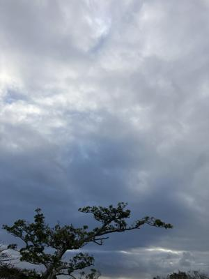
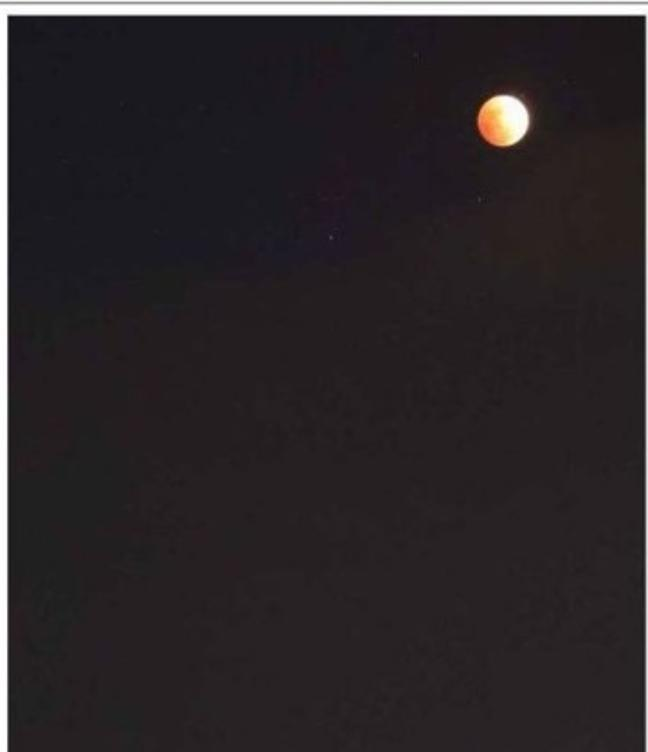

うるがいの話 ある日
最新: 旧暦１月１６日【うるがいの話 ある日】とは 一日だけのプログです
『うるがいの話』の最新一日だけのプログで、通信料が少なく経済的だ。カニの画像をクリックすると全ての日付が載る『うるがいの話』サイトを表示します
|
|
【うるがいの話】 うるがい(ｳﾙｶﾞｲ urugai)とは、『もずくがに』の名前でとても大きくなります。 |
|---|---|
|
|
【カミマヤーの話】 猫のことを方言でマヤーといいます。カミマヤー（kamimayaa）とは、神の猫のことです。 |
|
【たながぁの音楽】 たながぁ（ﾀﾅｶﾞｰ tanagaa）とは手長えびのことで、何種類かあり大きいのは車 エビぐらいになります。 |

|
【ぶながぁの話】 ぶながぁ(ﾌﾞﾅｶﾞｰ bunagaa)とは、赤い髪の毛、赤い身体、そして身長は１ｍ２０ｃｍ ぐらい、川の蟹を食べているの目撃された。場所は沖縄県国頭郡大宜味村のと ある村僕の隣近所に住んでいる爺さんから、聞いた話です。 |
|
|
【ギーマの話】 ギーマ(giima)とは、山原の里山に咲くスズランに似た、 花を付けます。実は食べられます、 気が付くと口の周りが紫になっています。 |
2026年03月04日 (水）旧暦１月１６日
15:24

お義母さんのお骨を、お寺に納骨して初めての旧暦１月１６日の
正月、駐車場が混んでました。諦めて、有料のところへ行きかけ
たのですが、一台もう少しで出ますから、待機してくださいと言
われ、運よく停められました。納骨堂は、老人ばかりでした。ヨ
メの妹は、去年のマンションでの１６日は来なかったのに、今回
はい行くと電話がありました、ヨメは去年は来なかったのに！と
愚痴っていた。車の中で、『え！、ミー（初）１６日でないの？
』と勘違いしていることが分かった。帰り車の中で、妹の体調の
近況を話す、数日前は足が痛くて歩けなかったという、お義父さ
んの杖があった筈と言う。家にあるよ、車のトランクにはお義母
さんの杖があるよと答える。お義母さんの杖をもらっていった。

旧約聖書（特にヨエル書2:31）：
・ 月が血（赤・ブラッドムーン）に染まる皆既月食の日から、
・ 世界は終末に向かい始め、神の裁きの前触れが「始まる日」
となる。
・ 神の最後の審判や終末が始まる時である。
明るく頑張って生きていれば、大丈夫です。
これから、退屈が出来ない、非常に面白い現象が続くことでしょ
う。
日本人には想像が出来ないほど、中東、欧米は、旧約聖書に忠実
に行動することを知っていましょう。
昨日の夜、上の写真のような赤い月を見ました。神秘的でした。
上の文は、伊勢白山道のプログを引用しました。戦争はどうなる
のでしょうか。
音楽電子事業協会の本が、届きました。ンー、中身を確認できな
いの注文したので。イマイチです。ネットで全て、得られる情報
です.